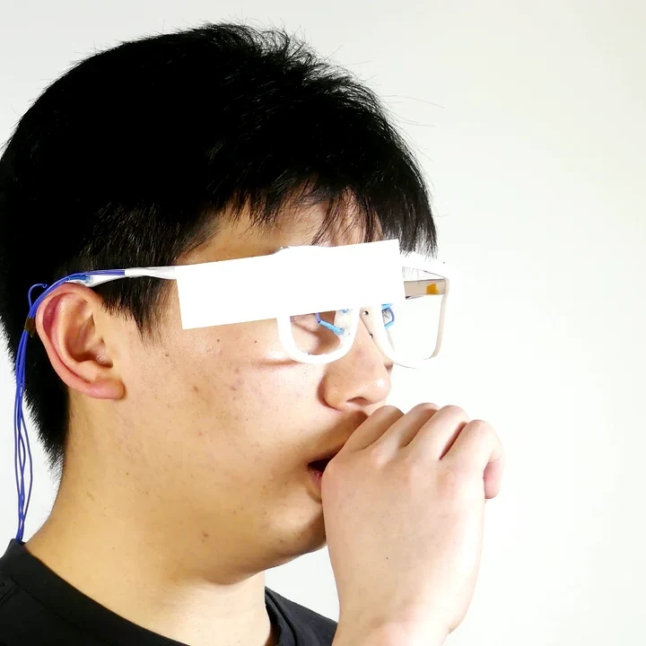
CoughIn submission
RespiraFrame
Respiratory sensing in an eyeglass frame, by bone conduction and impedance
Glasses drawn as the idea; the prototype appears in the photos
Why breathing
Breathing says a lot.
Respiratory events
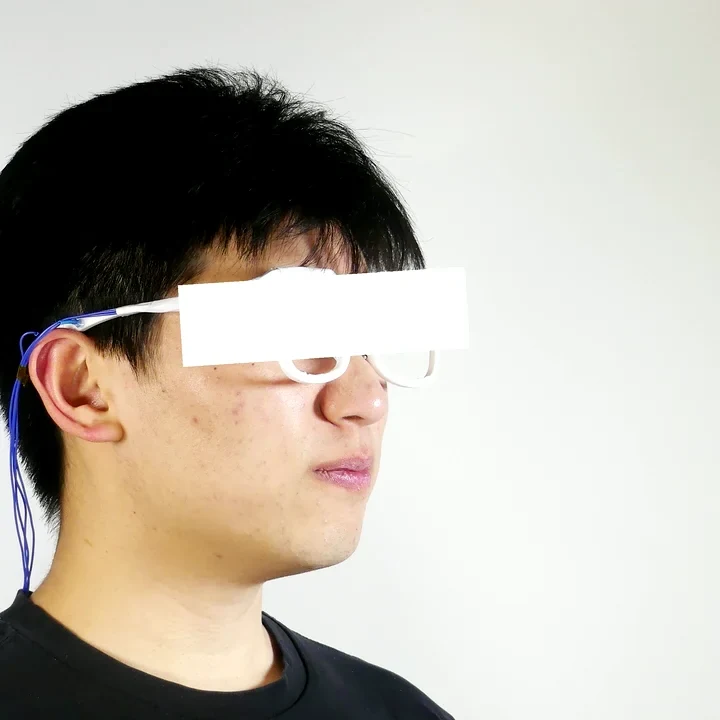
Sniff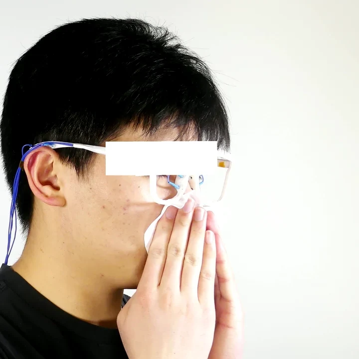
Nose blowing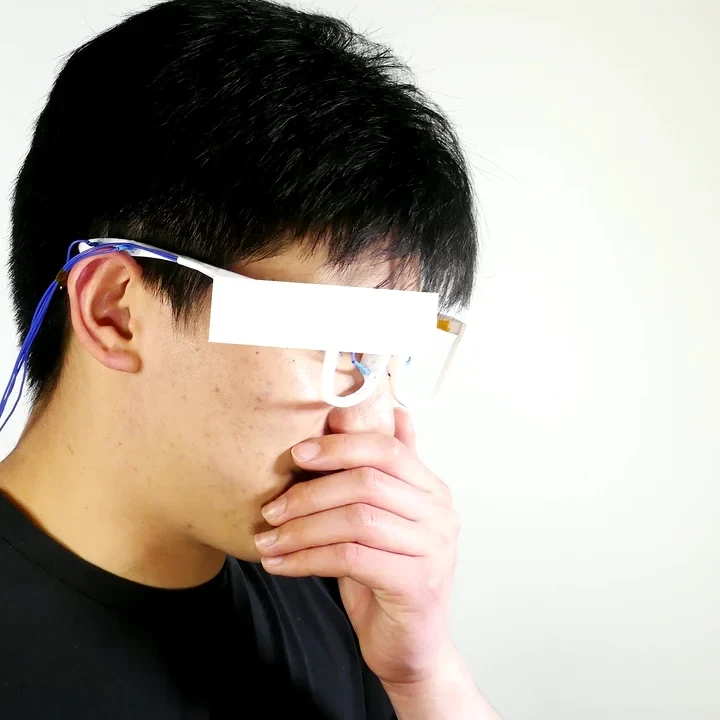
Sneeze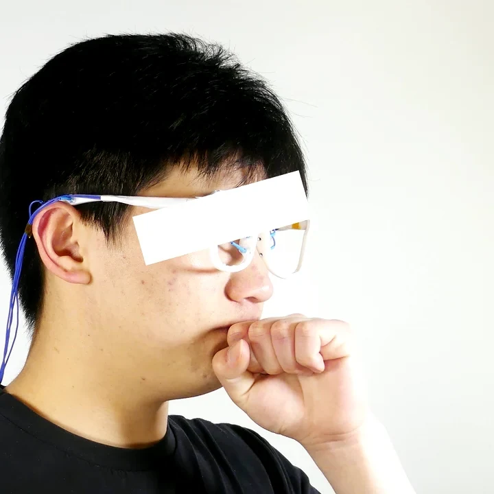
Throat clearingBreathing patterns
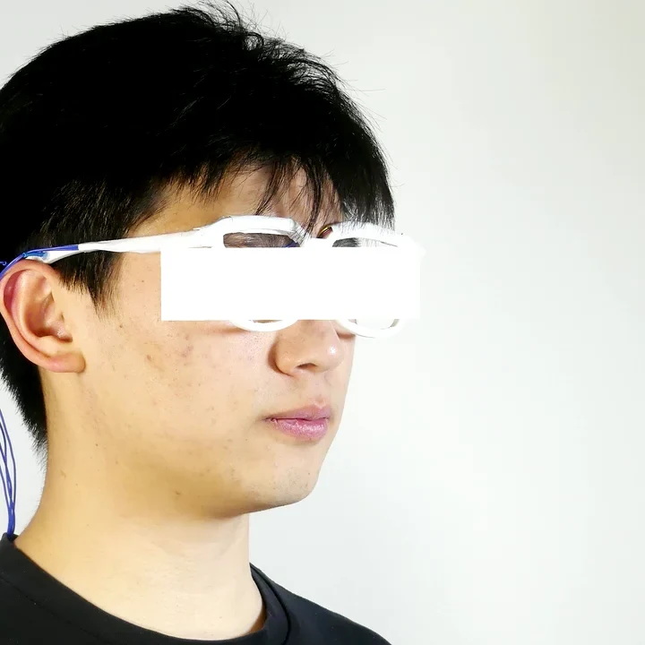
Nasal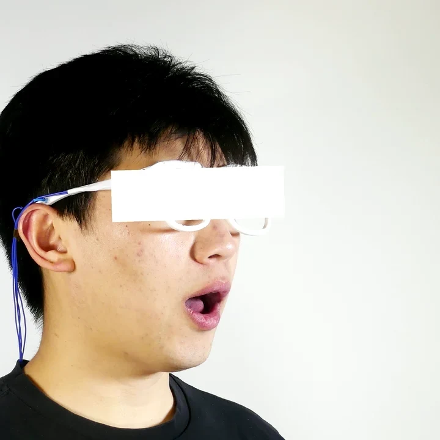
Oral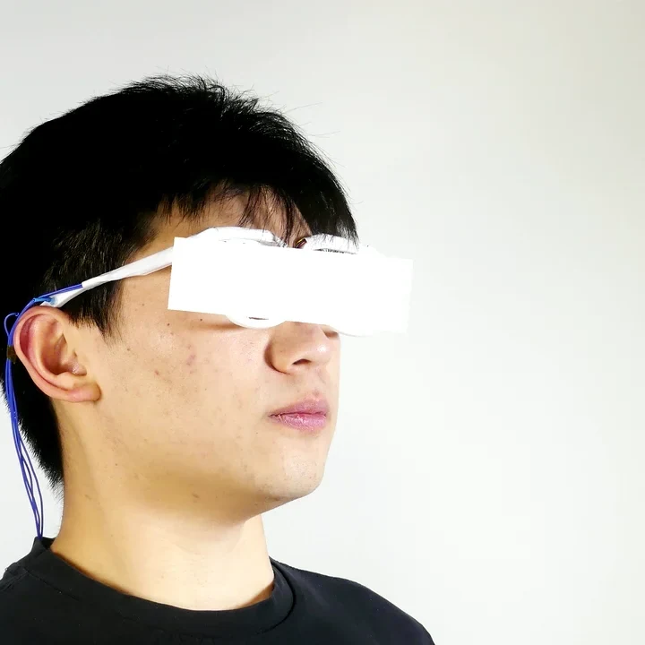
Deep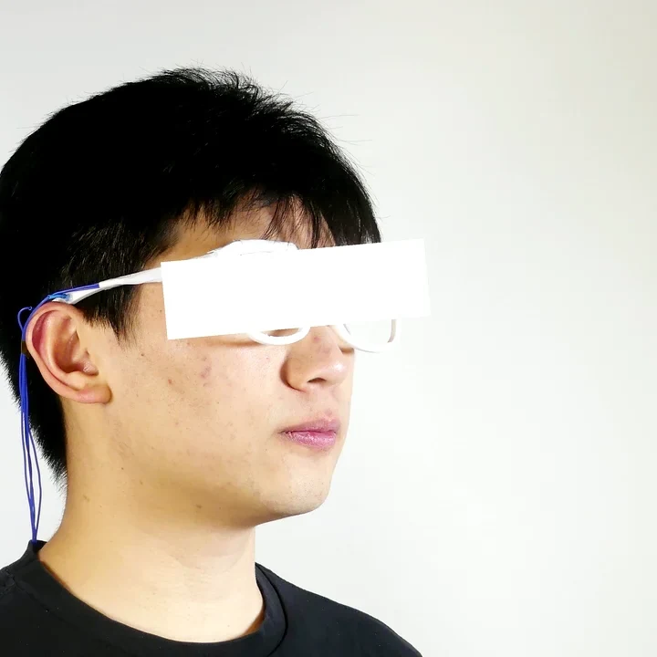
Shallow+ breath holding
Airflow drawn
Head: Lee Perry-Smith scan · CC BY 3.0
Systems today
Unobtrusive, or robust?
| Method | Form | Unobtrusive | Bystander | Noise | Wind | Motion |
|---|---|---|---|---|---|---|
| Anaya et al. | Chest belt | − | N/A | N/A | N/A | − |
| Ida et al. | Finger PPG | − | N/A | N/A | N/A | − |
| Listen2Cough · Whosecough | Any microphone | ✓ | − | − | − | − |
| CoughBuddy | Earphone | ✓ | ✓ | − | − | − |
| BreathPro | Earphone | ✓ | − | ✓ | − | N/A |
| EarSAVAS | Earphone | ✓ | − | ✓ | − | − |
| EchoBreath | Glasses | ✓ | ✓ | ✓ | − | − |
| ? | Glasses |
✓ good · − poor, or not reported · N/A not applicable · the paper's Table 1
Why it matters
Noise floods an ordinary microphone.
Measured Conventional microphone · the paper's recordings
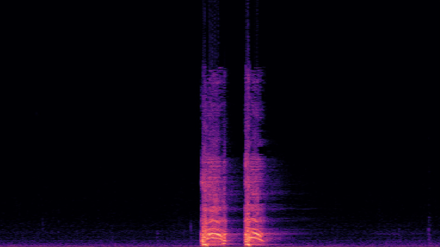
A cough · no added noise
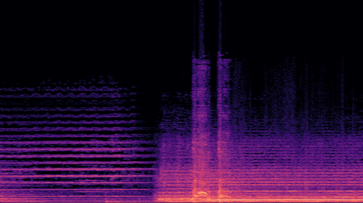
A cough · 80 dB noise
80 dB ≈ a busy street
Our goal
RespiraFrame fills the row.
| Method | Form | Unobtrusive | Bystander | Noise | Wind | Motion |
|---|---|---|---|---|---|---|
| Anaya et al. | Chest belt | − | N/A | N/A | N/A | − |
| Ida et al. | Finger PPG | − | N/A | N/A | N/A | − |
| Listen2Cough · Whosecough | Any microphone | ✓ | − | − | − | − |
| CoughBuddy | Earphone | ✓ | ✓ | − | − | − |
| BreathPro | Earphone | ✓ | − | ✓ | − | N/A |
| EarSAVAS | Earphone | ✓ | − | ✓ | − | − |
| EchoBreath | Glasses | ✓ | ✓ | ✓ | − | − |
| RespiraFrame | Glasses | ✓ | ✓ | ✓ | ✓ | ✓ |
✓ good · − poor, or not reported · N/A not applicable · the paper's Table 1
Our idea
Two channels, different weaknesses.
Bone conduction · a sensor in the frame picks up vibrations carried through the face and the frame
Impedance · electrodes feel the face change as you breathe
Room noise · the frame's sensor picks up less of it; impedance is not acoustic
VPUbeside the nose pad
Electrodesnose pads, temples
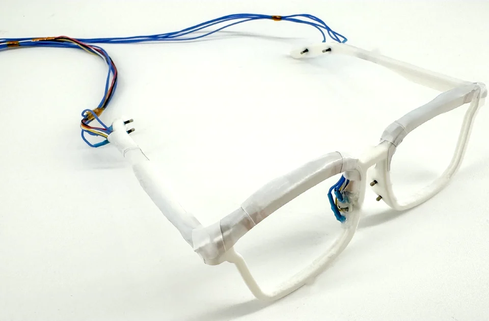
Drawn, slowed down
Head: Lee Perry-Smith scan · CC BY 3.0
The sensors
The sensors sit in the frame.
Glasses drawn as the idea; the photos show the prototype
ListenVPU in a notch by the nose pad · up to 8 kHz
Feel8 dry electrodes · nose pads, temple tips · 50 kHz · 400 µA
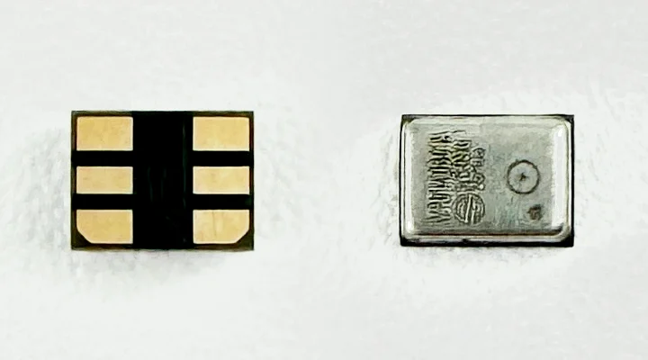
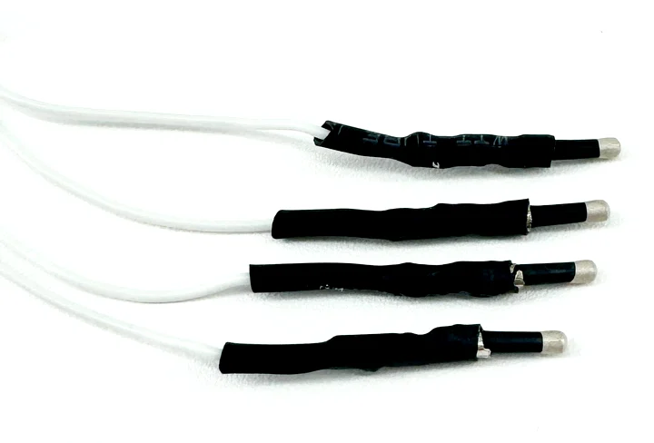
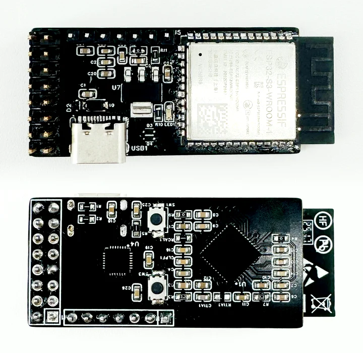
Acquire · stream · a separate board, wireless
Bone conduction
Bone conduction hears less of the room.
Embedded, the frame is a barrier.
- Cough
- Cough + 80 dB
- 80 dB noise
- 60 dB
- 40 dB
—
Measured The paper's Fig. 2 · no common colour scale given: compare each with itself
Measured VPU only · one colour scale · the paper's Fig. 6
Speech noise, 80 dBThroat clearing
Touching the skin
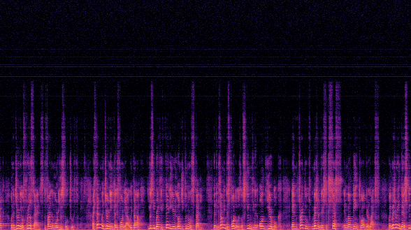
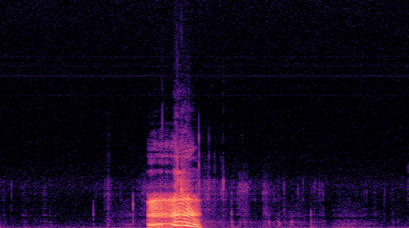
Hollow frame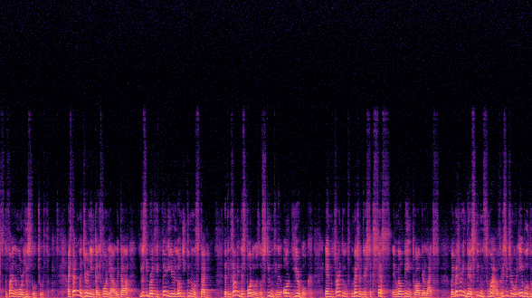
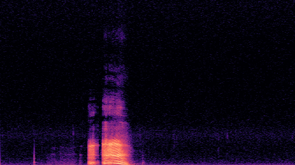
Embedded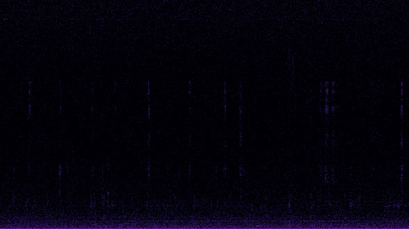
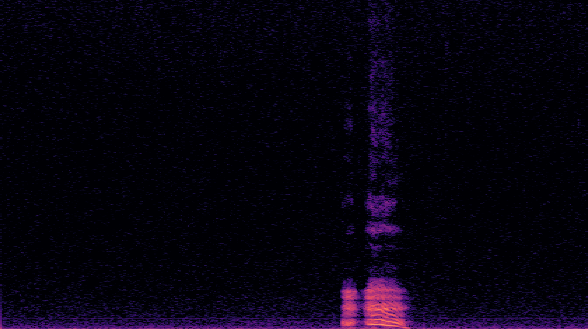
Embedded: the paper's best balance · some leakage remains
Rings and ripples drawn
Head: Lee Perry-Smith scan · CC BY 3.0
Impedance
Tiny currents read the face.
Breathing changes the channels.
A neighbouring pair injects 50 kHz · 400 µA; neighbouring pairs measure; the pair rotates.
- Injecting
- —
Electrode order assumed · paths drawn
Measured One 4 s window per class · one participant
Smoothed and differenced as in the paper · paths drawn
Head: Lee Perry-Smith scan · CC BY 3.0
Fusion
Each task's model listens to both.
Four tasks, four such models
Fused vs the weaker channel: p < 0.001 · the paper's bars carry ±7–10-point error bars, not drawn here
Results · lab
Four tasks, one frame.
19 participants (breath holding: 15) · user-dependent
80.6% unseen users
75.4% unseen users
81.6% unseen users
87.8% unseen users
Leave-one-participant-out
Robustness
Hard conditions, one at a time.
Noise
< 2–3 points lost
40 → 80 dB, every task. No significant differences.
Recorded noise added to the VPU test data · EIT unchanged
Wind
Events 85 · 80 · 69%
Fan at full speed · hair dryer low · hair dryer full (the paper's text). Other tasks: no significant change.
Full hair dryer: a stress test
Wind drawn
Bystander
2.7% false alarms
A neighbour has the five events; the wearer talks, drinks, tidies, uses a phone or breathes.
19 participants in pairs
Second head and rings drawn
Motion
Route 93.2 · 93.9 · 94.1%
Standing · walking · running in place: no significant difference. Events: 87.1% → 70.3% running.
Motion study · fused model
Noise drawn · in the study it came from a laptop ≈ 30 cm away
Head drawn bobbing, as when running in place
Head: Lee Perry-Smith scan · CC BY 3.0
Semi-wild
Office, cafeteria, outdoors.
| Task | Office · lab | Cafeteria | Outdoor | Average |
|---|---|---|---|---|
| Abnormal events | 81.6 | 86.2 | 95.2 | 87.6% |
| Nasal / oral | 77.1 | 79.4 | 88.0 | 81.5% |
| Deep / shallow | 76.0 | 89.0 | 88.6 | 84.6% |
10 participants · semi-wild · user-dependent · window-level · no breath holding · tested on a different day from training
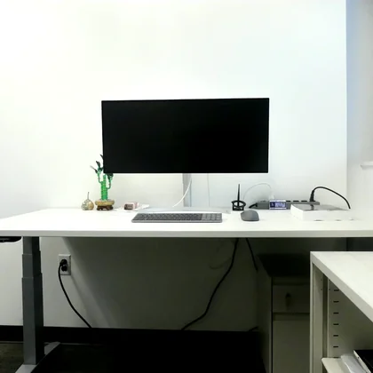
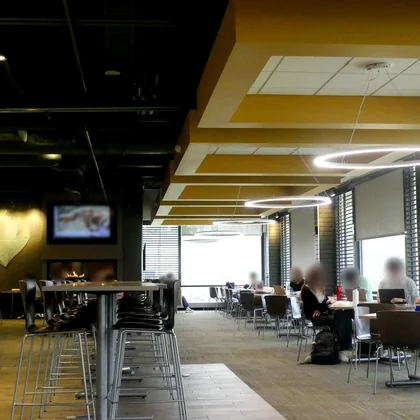
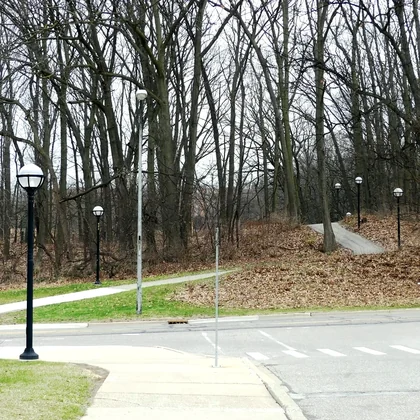
Longitudinal
No systematic decline over four weeks.
10 participants · days 7, 14, 21, 28 · the paper's Table 2
Questionnaire
Participants rate the form factor highly.
6.03comfort · wearability
6.08social acceptability
6.38usefulness · continued use
Out of 7 · 26 participants · the current prototype
6.62 · glasses suit this better than masks or ear-worn devices
5.65 · the lowest: wearing the current prototype in public
RespiraFrame
- 01Two channels · bone conduction and impedance, one frame
- 02Four tasks · 84.9 to 92.5% in the lab, on each user's own data
- 03Hard conditions · noise, wind, bystanders, motion
- 04Four weeks · no systematic decline
Thank you.
In submission
RespiraFrame
Respiratory sensing in an eyeglass frame, by bone conduction and impedance
Thank you.
Head model in the talk: Lee Perry-Smith scan · CC BY 3.0